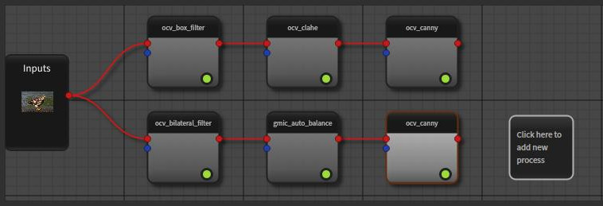

Going deeper with workflows
Set workflow inputs
In the previous section, we use run_on() to execute a workflow on common inputs.
But this function can only be used for a workflow with a single input. In fact, a workflow object is also a task
(Workflow is derived from CWorkflowTask) and you can add as many inputs as you want.
Please find below the generic way to set workflow inputs.
from ikomia.core import IODataType
from ikomia.dataprocess import workflow, CImageIO
wf = workflow.create("MyWorkflow")
# create image inputs
first_input = CImageIO(IODataType.IMAGE, "1st", "path/to/image1")
second_input = CImageIO(IODataType.IMAGE, "2nd", "path/to/image2")
# add 2 inputs
wf.addInput(first_input)
wf.addInput(second_input)
# Or
wf.setInput(first_input, 0)
wf.setInput(second_input, 1)
See addInput() and setInput() for details.
The Workflow class also provides helper functions to ease the management of image inputs. You can use
set_image_input() and set_directory_input()
for this specific data type.
Get a specific workflow task
In some cases, it may be necessary to access the task object instance directly. The Workflow class provides
a single method to get a task from its name: find_task(). When a workflow has several tasks with the
same name, the function returns the list of candidates. Please note that the candidates are sorted according to their order of insertion in the workflow,
from the oldest to the most recent. You can also specify a zero-based index (insertion order) to get the wanted task only.
Considering the following workflow:
Here is how you will retrieve a specific task:
from ikomia.dataprocess import workflow
wf = workflow.load("path/to/workflow")
# Get the bilateral filter task
bilateral_id, bilateral_obj = wf.find_task("ocv_bilateral_filter")
# Get the candidates for Canny filter
# canny_candidates is a list of pairs (id, obj) here
canny_candidates = wf.find_task("ocv_canny")
# Get the first inserted Canny filter task
first_canny_id, first_canny_obj = wf.find_task("ocv_canny", 0)
# Get the second inserted Canny filter task
second_canny_id, second_canny_obj = wf.find_task("ocv_canny", 1)
Note
When you create a workflow from scratch, the function add_task() returns a pair (id, obj) that could be used
to get the task later. In this case, you should call getTask() with the corresponding id instead of
find_task() (faster).
Get workflow outputs
The generic way to get workflow outputs is to firstly get the task object and then get its outputs.
from ikomia.dataprocess import workflow
wf = workflow.create("ObjectDetection")
# Store id and object instance while adding task to the workflow
yolov4_id, yolov4_obj = wf.add_task("infer_yolo_v4")
wf.connect_tasks(wf.getRootID(), yolov4_id)
wf.run_on(path="path/to/image.png")
# Optional use find_task
yolov4_id, yolov4_obj = wf.find_task("infer_yolo_v4")
# Get outputs
# 1 - Forwarded source image: CImageIO object
img_output = yolov4_obj.getOutput(0)
# 2 - Graphics objects (box): CGraphicsOutput object
graphics_output = yolov4_obj.getOutput(1)
# 3- Box information: CBlobMeasureIO object
box_output = yolov4_obj.getOutput(2)
The Workflow class provides convenient methods to get outputs by type. For all these methods,
you could get outputs from the task name or the task id (faster). When using task name, the methods will return a list of outputs for all matching
tasks. When a task has several outputs of the same type, you can specify the output index (zero-based index among all outputs).
from ikomia.dataprocess import workflow
wf = workflow.create("ObjectDetection")
# Store id and object instance while adding task to the workflow
yolov4_id, yolov4_obj = wf.add_task("infer_yolo_v4")
wf.connect_tasks(wf.getRootID(), yolov4_id)
wf.run_on(path="path/to/image.png")
img_output = wf.get_image_output(yolov4_id)
graphics_output = wf.get_graphics_output(yolov4_id)
box_output = wf.get_blob_measure_output(yolov4_id)
Note
We provide high-level methods to handle image outputs. Thus from a workflow object, you can access image array directly
(get_image()) or compute the merge image (for visualization) between graphics and image
outputs (get_image_with_graphics()).
Handle the workflow graph structure
A workflow is a graph where the nodes are the runnable tasks (algorithms) and the links between nodes are connections from task outputs to task inputs. Basically, you need two methods to build your own workflow:
add_task(): instanciate an algorithm object and add it to the workflow. All algorithms are identified by their unique names and the function uses this name to create instance (factory design pattern). Instanciation process firstly searches for installed algorithms in the registry. If not found, it searches in Ikomia HUB and do all installation steps automatically. Note that this installation can take a while (download package and install dependencies) but it will be executed once.connect_tasks(): connect 2 tasks of the workflow so that output data from the source task will be forwarded to target task input when running the workflow.
The first way to connect tasks is to let the system create connections automatically based on input and output data types. This will work well in simple scenarios. In the following example, we will create a simple workflow composed by a Box Filter (noise reduction) and CLAHE algorithm (histogram equalization). Both tasks have 2 inputs (IMAGE + GRAPHICS) and 1 output (IMAGE). In this simple case, auto-connection will work well and make the code easy.
from ikomia.utils import ik
from ikomia.dataprocess import workflow
wf = workflow.create("MyWorkflow")
# Add Box Filter
box_filter_id, box_filter = wf.add_task(ik.ocv_box_filter)
# Connect to root (auto-connection)
wf.connect_tasks(wf.getRootID(), box_filter_id)
# Add CLAHE
clahe_id, clahe = wf.add_task(ik.ocv_clahe)
# Connect to Box Filter (auto-connection)
wf.connect_tasks(box_filter_id, clahe_id)
If you want to have a full control in the connection mechanism, you could set manually the list of connections between 2 tasks. A connection is defined as a pair of index, the first one being the output index of the source task, the second being the input index of the target task. You must pass a list of pairs because 2 tasks can be connected by multiple output-input links. Adding a DT Filter with manual connections to the previous workflow will look like this:
# Add DT Filter algorithm to the workflow
dtfilter_id, dtfilter = wf.add_task(ik.ocv_dt_filter)
# Connect to CLAHE with manual connections
wf.connect_tasks(clahe_id, dtfilter_id, [(0, 0), (0, 1)])
The Workflow class provides also functions to browse the graph structure of an existing workflow. Consult
getTaskIDs(), getTask(),
getParents(), getFinalTasks(),
getInEdges(), getOutEdges(),
getEdgeSource(), getEdgeTarget(),
getEdgeInfo() for details.
Create a Deep Learning training workflow
Training deep learning models is an important use case of Ikomia API. The workflow approach is also well suited for this case and you can handle it with few lines of code. Basically, it will consist in 2 main tasks:
a dataset loader that will convert your custom dataset structure into the Ikomia Dataset structure. This conversion is mandatory to leverage all training algorithms you can find in Ikomia HUB. We provide dataset loader of common formats like COCO, PascalVOC, YOLO…
a training algorithm. You will find various algorithms in Ikomia HUB for classification, object detection, segmentation…
Here is an example of a training workflow for a YOLOv4 model and a custom dataset in YOLO format (grapes detection):
from ikomia.utils import ik
from ikomia.dataprocess import workflow
wf = workflow.create("MyTrainingWorkflow")
# Add dataset loader for grapes dataset
# No need to connect dataset loader task to root node as it does not need workflow input
wgisd_id, wgisd = wf.add_task("dataset_wgisd")
dataset_params = {
ik.dataset_wgisd_param.data_folder_path: "path/to/data/folder",
ik.dataset_wgisd_param.class_file_path: "path/to/class/file.txt"
}
wf.set_parameters(dataset_params, task_id=wgisd_id)
# Add YOLO training algorithm
yolo_id, yolo = wf.add_task(ik.train_yolo)
yolo_params = { ik.train_yolo_param.model: "yolov4" }
wf.set_parameters(yolo_params, task_id=yolo_id)
wf.connect_tasks(wgisd_id, yolo_id)
# Start training
wf.run()
Note
Ikomia API integrates MLflow and Tensorboard for training monitoring. Depending on the algorithm implementation, you will have access to metrics, parameters, artifacts in MLflow or Tensorboard or both.
Working with video files
Processing video files is available out of the box. Ikomia API leverages OpenCV video reader capabilities to apply
any workflows on whole video. Basically, it will execute the workflow on every frames and return when all frames are
processed. You should enable the auto-save mode (setAutoSave()) at
workflow or task level to save outputs to disk. Output folder can be set at either workflow or task level also
(setOutputFolder()), default is the user home folder.
from ikomia.dataprocess import workflow
wf = workflow.load("path_to_your_workflow")
# Enable auto-save mode to let Ikomia API save outputs to disk for all tasks
wf.setAutoSave(True)
# Video from local filesystem
wf.run_on(path="path_to_your_video.avi")
# Video from public url
wf.run_on(url="url_of_your_video")
# Batch processing from a folder
wf.run_on(folder="local_folder_containing_your_videos")
Working with video streams
At this time, we do not offer high level API to handle streams. On the other hand, it is very simple to run a workflow on each frame acquired by a third-party video library. Here is an example with OpenCV:
from ikomia.utils import ik
from ikomia.dataprocess import workflow
import cv2
# Initializing stream capture
cap = cv2.VideoCapture(0)
# Build workflow
wf = workflow.create("MyVideoWorkflow")
clahe_id, clahe = wf.add_task(ik.ocv_clahe)
wf.connect_tasks(wf.getRootID(), clahe_id)
canny_id, canny = wf.add_task(ik.ocv_canny)
wf.connect_tasks(clahe_id, canny_id)
while True:
ret, img = cap.read()
# Execute on current frame
wf.run_on(array=img)
res_img = wf.get_image(canny_id, 0)
cv2.imshow("Result", res_img)
if cv2.waitKey(1) == 27:
break
cv2.destroyAllWindows()
Get workflow time metrics
Ikomia API provides functions to get executing time of a workflow, globally and at task level.
Get the total time (getTotalElapsedTime()):
from ikomia.dataprocess import workflow
wf = workflow.load("path/to/workflow.json")
wf.set_image_input(path="path/to/image.png")
wf.run()
# Executing time in ms
time_ms = wf.getTotalElapsedTime()
Get executing time for each task
(getElapsedTime() and
getElapsedTimeTo()):
from ikomia.dataprocess import workflow
wf = workflow.load("path/to/workflow.json")
wf.set_image_input(path="path/to/image.png")
wf.run()
ids = wf.getTaskIDs()
for task_id in ids:
task = wf.getTask(task_id)
time_ms = task.getElapsedTime()
time_to_ms = wf.getElapsedTimeTo(task_id)
You can also get all metrics in a dict structure (get_time_metrics()):
from ikomia.dataprocess import workflow
wf = workflow.load("path/to/workflow.json")
wf.set_image_input(path="path/to/image.png")
wf.run()
metrics = wf.get_time_metrics()